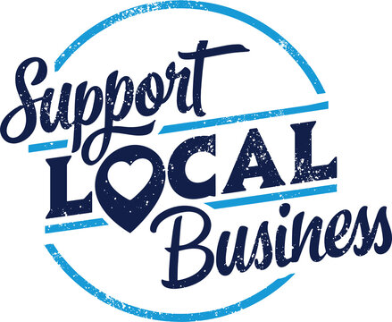
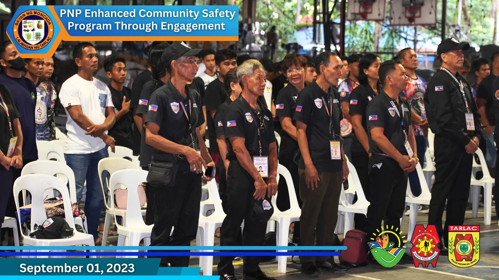

As Vice Mayor of Cebu City, I, Alvin Garcia, approach leadership as a balance of collaboration and responsibility. My role involves bridging the vision of our city’s leadership with the voice of our people, ensuring that every policy and decision reflects the true needs and aspirations of the Cebuanos. I believe that public service is not just about governance but about building a city where every resident feels valued and heard. Cebu City is a dynamic and evolving community, and my mission is to help guide its growth while preserving the values and traditions that define us as a people.
One of my primary responsibilities as Vice Mayor is presiding over the City Council to ensure that legislation aligns with the city's developmental goals. I strive to foster open and productive discussions, encouraging collaboration among council members regardless of political affiliations. This collaborative approach ensures that the policies we create are inclusive, pragmatic, and beneficial to all sectors of society. My focus is always on crafting laws and programs that address issues such as education, public health, and infrastructure development—areas that directly impact the daily lives of our constituents.
Public service, to me, extends beyond legislation. I am deeply committed to community engagement, recognizing that the best way to lead is by understanding the real challenges faced by our people. By actively listening to their concerns, I can work with the mayor and council to implement programs that address issues such as housing, livelihood opportunities, and access to basic services. Whether it’s improving barangay facilities or supporting disaster response efforts, my goal is to ensure that Cebu City remains a place where every resident feels safe, supported, and empowered.
My leadership style is rooted in integrity and accountability. I believe that public officials must not only lead but also set an example for others to follow. Transparency in governance and a genuine commitment to serving the people are principles that I hold dear. As Vice Mayor, I work tirelessly to ensure that government resources are used efficiently and that decisions are made with the best interests of our city at heart. Challenges are inevitable, but I face them with courage and the unwavering belief that we can overcome them through unity and determination.
Looking toward the future, my vision for Cebu City is one of inclusivity, sustainability, and resilience. I dream of a city where progress is felt by all, where no one is left behind as we move forward. Together with the mayor and other city officials, I am committed to ensuring that Cebu City continues to thrive as a hub of culture, commerce, and innovation. Serving as Vice Mayor is both a privilege and a responsibility, and I will continue to dedicate myself to building a brighter and more prosperous future for our beloved city.
Vice Mayor Raymond Alvin N. Garcia's Achievements
Learn about Vice Mayor Raymond Alvin N. Garcia’s significant contributions to Cebu City’s growth and development.
Vice Mayor Garcia’s Achievements
Implementation of digital governance for improved services
Support for small businesses and local entrepreneurs

Enhancement of public safety and community engagement programs

His Vision for Cebu City
Development of smart city initiatives
Focus on sustainable urban planning
Expansion of social welfare programs for marginalized sectors